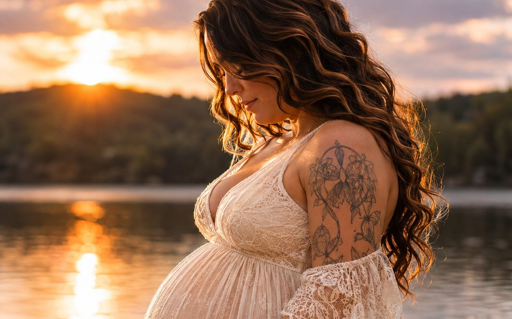
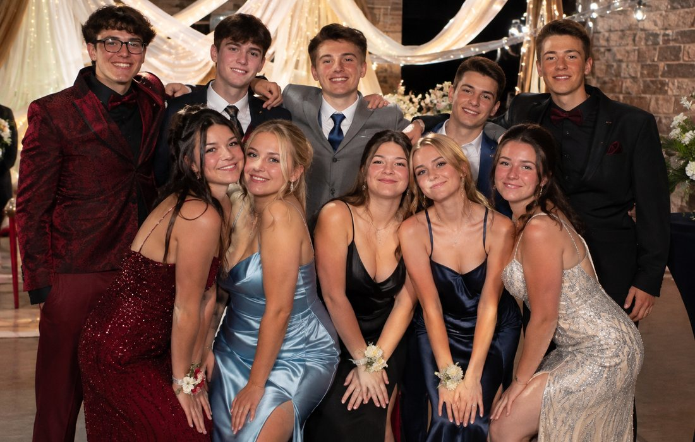

Mes prestations
Des séances photo pour toutes les étapes
importantes de votre vie.
PROMO 95 $
Noël

Grossesse

Accouchement

Nouveau-né

Famille

Couple

Fêtes

Garderie / École

Finissants

Bal de promos
Chaque séance, à votre image
Accouchement
Les premières minutes de votre rencontre, avec douceur et discrétion.
Réserver cette séance →Garderie / École
Photos de groupe et portraits individuels à la garderie ou à l'école. Chaque enfant a sa galerie privée, avec code QR et mot de passe : les parents ne voient que les photos de leur enfant.
Réserver cette séance →Finissants
Toge, mortier et diplôme : un portrait pour souligner la fin d'une étape.
Réserver cette séance →Bal de promos
Les plus belles photos de votre soirée de bal, seul ou entre amis.
Réserver cette séance →Basée à Campbellton, au Nouveau-Brunswick, j'accueille les familles de toute la région du Restigouche. Toutes les photos sont remises en fichiers numériques haute résolution, dans une galerie privée, en 3 semaines.